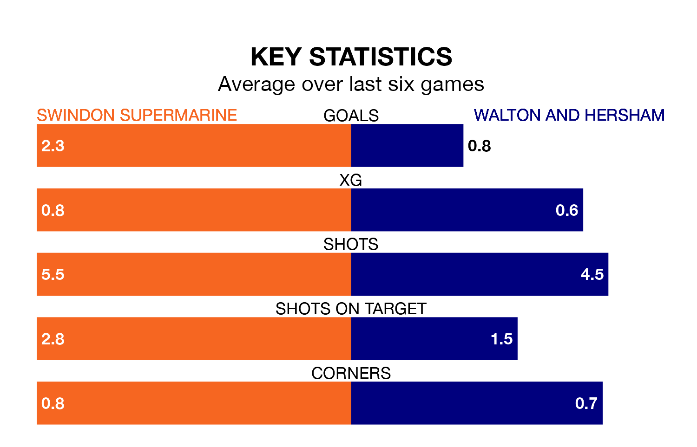

Swindon Supermarine host Walton and Hersham on Saturday at the Webbs Wood Stadium in Southern League Premier South.
In their last league match, on January 6, Swindon Supermarine lost to Beaconsfield Town 4-3 away.
Walton & Hersham drew, 0-0 away at Hayes and Yeading United.
With 47 goals in 23 games so far this season, Walton & Hersham are scoring more than average in the league with 2.0 goals per game. And they are conceding at an average rate, letting in 40 goals at a rate of 1.7 per game.
Swindon Supermarine are also above average scorers, with 1.8 goals per game, compared to a league average of 1.7. They have conceded 2.5 goals per game.
The home team are 18th in the table after 24 games, of which they have won six and drawn five, earning 23 points.
The visitors are nine places ahead of Swindon Supermarine in ninth, with 10 wins and six draws putting them on 36 points.
Swindon Supermarine are in mixed form in Southern League Premier South, with three wins and three losses from their last six games.
With two wins and two draws over that period, Walton & Hersham's form is slightly worse – they have taken eight points from 18, compared to the hosts' nine.
Updated: 13:38 (UTC), 10/01/24